Disfarces atuais do Ditto
Atualizado em 4 de março de 2026
Estes são os Pokémon que o Ditto pode usar como disfarce no Pokémon GO. Confira a lista, o shiny e as dicas no FAQ abaixo.
Disfarces originais
Após os eventos anteriores de Ditto, a lista pode ter voltado ao padrão. Se a página não tiver sido atualizada, você pode assumir com segurança que estes estão corretos - os disfarces não mudam todo mês.
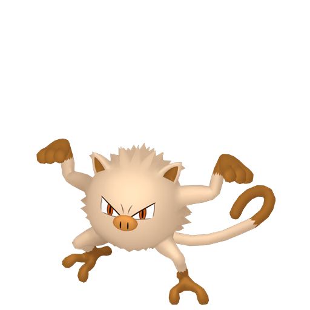
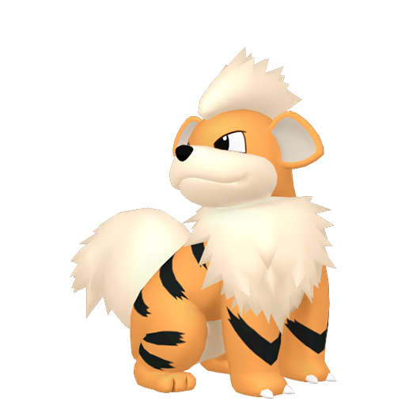
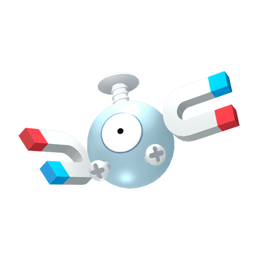
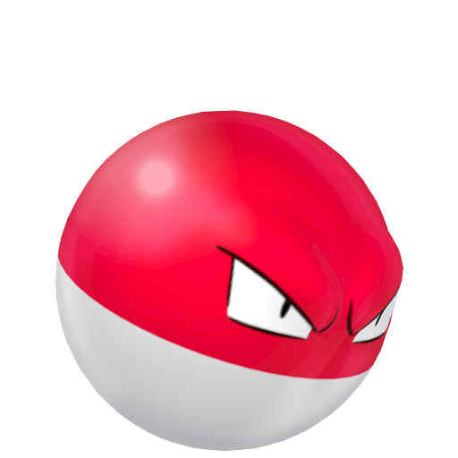
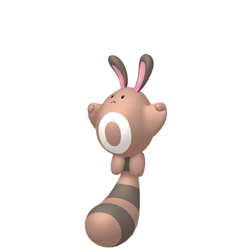
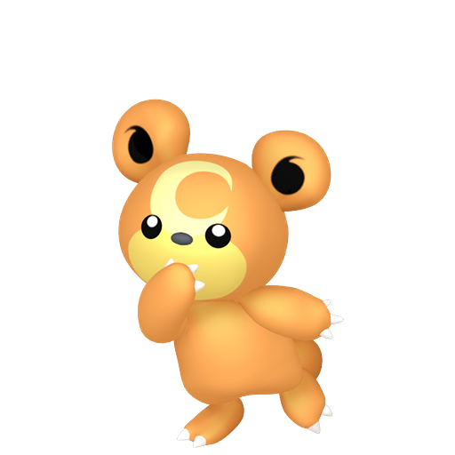
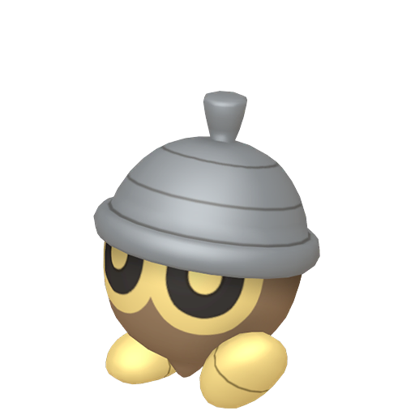
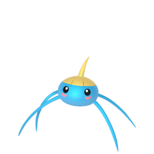
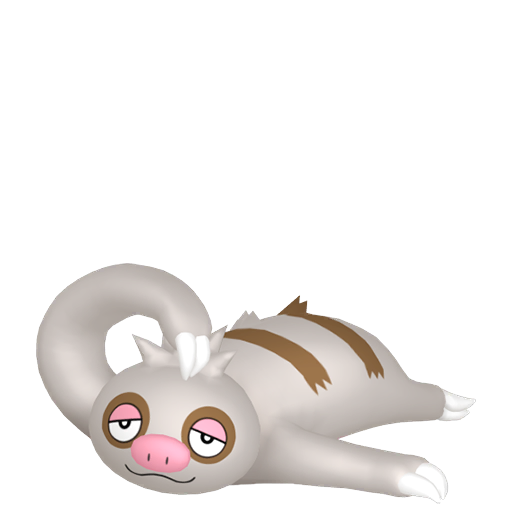
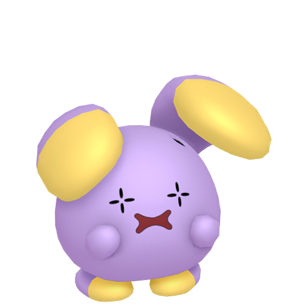
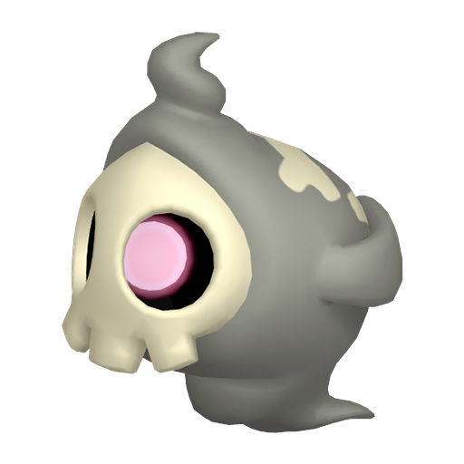
Ditto Shiny disponível
O Ditto shiny está disponível no jogo. Qualquer Pokémon da lista de disfarces pode revelar um Ditto shiny ao ser capturado.
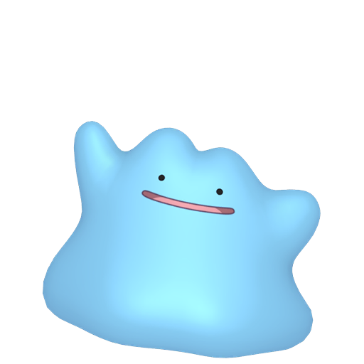
Ditto Shiny
Se você encontrar um shiny de um Pokémon da lista (ex.: Growlithe shiny), ele não vira Ditto. Já um exemplar normal da lista pode ser Ditto - e ainda sair shiny.
Perguntas frequentes
Como encontrar Ditto no Pokémon GO?
O Ditto só aparece disfarçado como outro Pokémon da lista acima. Ele se comporta exatamente como o Pokémon que está imitando.
A única forma de descobrir é capturando. Se for Ditto, há uma animação de revelação após a captura.
Existe alguma dica para identificar um Ditto?
Não há diferença visual. Porém, se um Pokémon que normalmente é fácil de capturar estiver dando trabalho, pode ser Ditto - ele tem taxa de captura menor, mas usa as cores do anel do Pokémon que está imitando.
Na prática, o melhor é maximizar as chances de captura em qualquer candidato da lista.
Dica útil: o disfarce é o mesmo para todos os treinadores. Se alguém avistar um Ditto selvagem, você pode encontrar e capturar o mesmo.
E se eu encontrar um shiny de um Pokémon da lista?
Um Pokémon já shiny na lista de disfarces não se transforma em Ditto.
Já um exemplar normal da lista pode ser Ditto e, ao revelar, pode sair shiny.
O Ditto é útil em batalha?
No Pokémon GO o Ditto não é forte em batalha. Ele copia golpes, status base e tipos do oponente, mas não copia o HP - por isso fica bem frágil.
Mesmo assim, ele costuma ser necessário em pesquisas especiais. Não se preocupe demais: ele aparece quando você menos espera.